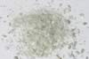

|
DOCUMENTATION_FORMAT: MINERAL
SAMPLE_ID: HS315.1B, HS315.2B, HS315.4B
MINERAL_TYPE: Inosilicate
MINERAL: Actinolite (Amphibole group)
FORMULA: Ca2(Mg,Fe+2)5Si8O22(OH)2
FORMULA_HTML: Ca2(Mg,Fe+2)5Si8O22(OH)2
COLLECTION_LOCALITY: Colorado
ORIGINAL_DONOR: Hunt and Salisbury Collection
CURRENT_SAMPLE_LOCATION: USGS Denver Spectroscopy Laboratory
ULTIMATE_SAMPLE_LOCATION: USGS Denver Spectroscopy Laboratory
SAMPLE_DESCRIPTION:
Forms series with Tremolite and Ferro-actinolite.
Original spectrum published in:
Hunt, G.R., J.W. Salisbury, and C.J. Lenhoff, 1973, Visible and near-infrared spectra of minerals and rocks: VI. Additional silicates. Modern Geology, v. 4, p. 85-106.
With the note: "The very weak band near 0.63 µm indicates the presence of some ferric iron, which is often abundant in actinolites"
Grain size fractions are indicated by the extension after the sample number:
.1B = <5 µm
.2B = <74 µm
.4B = 250-1200 µm
IMAGE_OF_SAMPLE:

END_SAMPLE_DESCRIPTION.
XRD_ANALYSIS:
40 kV - 30 mA, 7.0-9.5 keV
File: actn315.out, *.mdi (smear mount on quartz plate)
References: Borg and Smith (1969); Huebner's reference patterns
Found: Clinoamphibole; trace of chlorite (?), talc, mica
Comment: Unusually large number of sharp reflections indicating
excellent crystallinity and suggesting compositional homogeneity.
Pattern is very similar to tremolite-actinolite from Ward's Creek,
California, and the calculated tremolite pattern of Borg and Smith
(1969). The identification of mica is based on one reflection
(basal), of talc on the (002) and (004) reflections, and of chlorite
on 2 ragged basal reflections. There is not a distinct 14 Angstroms chlorite
reflection. Coarser fraction than usual; was 4B used for
spectroscopy?
J.S. Huebner, J. Pickrell, T. Schaefer, written communication 1994
END_XRD_ANALYSIS.
COMPOSITIONAL_ANALYSIS_TYPE: EPMA # XRF, EPMA, ICP(Trace), WChem
| COMPOSITION KEYWORD |
Oxide ASCII |
Amount | Weight Percent, % |
Oxide html |
|---|---|---|---|---|
| COMPOSITION: | SiO2 | 57.72 | wt% | SiO2 |
| COMPOSITION: | TiO2 | 0.01 | wt% | TiO2 |
| COMPOSITION: | Al2O3 | 1.38 | wt% | Al2O3 |
| COMPOSITION: | Cr2O3 | 0.02 | wt% | Cr2O3 |
| COMPOSITION: | FeO | 1.37 | wt% | FeO |
| COMPOSITION: | MnO | 0.33 | wt% | MnO |
| COMPOSITION: | MgO | 24.58 | wt% | MgO |
| COMPOSITION: | CaO | 13.27 | wt% | CaO |
| COMPOSITION: | Na2O | 0.37 | wt% | Na2O |
| COMPOSITION: | K2O | 0.09 | wt% | K2O |
| COMPOSITION: | Total | 99.14 | wt% | |
| COMPOSITION: | O=Cl,F,S | wt% | #correction for Cl, F, S | |
| COMPOSITION: | New Total | wt% |
COMPOSITION_TRACE: None
COMPOSITION_DISCUSSION:
EM analysis by Gregg A. Swayze at USGS Branch of Geophysics, Denver, Colorado.
END_COMPOSITION_DISCUSSION.
MICROSCOPIC_EXAMINATION:
Optical examination gives the following mineral mode:
96 vol% actinolite
3 vol% talc or mica
1 vol% Fe-stained pyrite?
Bimodal grain size distribution:
population 1 avg. grain size = 1000µm 99.9 vol%
population 2 avg. grain size = 30µm 0.1 vol%
avg. grain size all populations = 1000µm
Prismatic actinolite crystals with occasional pyrite? Inclusions altered to limonite and staining surrounding actinolite. Bundles of micaceous soft mineral resembles talc. Some actinolite grains (about 10 vol%) are polygranular, whereas most are single prisms bounded by cleavage faces. G. Swayze
END_MICROSCOPIC_EXAMINATION.
SPECTROSCOPIC_DISCUSSION:
END_SPECTROSCOPIC_DISCUSSION.
SPECTRAL_PURITY: 1b2_3_4_ # HS315.1B # 1= 0.2-3, 2= 1.5-6, 3= 6-25, 4= 20-150 microns
SPECTRAL_PURITY: 1b2_3_4_ # HS315.2B # 1= 0.2-3, 2= 1.5-6, 3= 6-25, 4= 20-150 microns
SPECTRAL_PURITY: 1b2b3b4b # HS315.4B # 1= 0.2-3, 2= 1.5-6, 3= 6-25, 4= 20-150 microns
{kind=link}